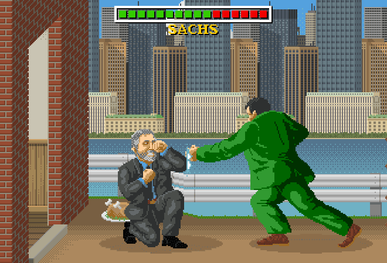
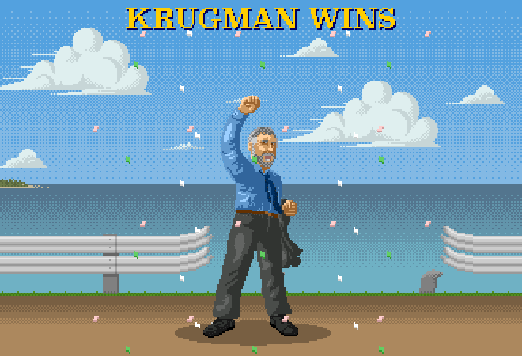

By Jeremy Kahn
Illustrations by Walter Newton
Since the financial crisis, Nobel Prize–winning economist and New York Times columnist Paul Krugman has devoted no fewer than 74 columns and blog posts to what he calls “austerians”– supporters of government budget cuts in response to recession. Any fiscal adjustments most developed economies need are long-term, whereas austerity is short-term, he says. Krugman has also gone after central bankers who were too slow in lowering rates in response to the crisis and then too quick to raise them during the recovery, calling them “sadomonetarists” who enjoy inflicting economic suffering. Krugman has acquired powerful critics on the left and right who accuse him of everything from intellectual dishonesty to political naiveté.
Krugman accuses Sweden’s Riksbank of “sadomonetarism”–raising rates in 2010 and 2011 at a time when, though the economy was growing, unemployment remained high and inflation low. Doing so, he said, risked turning Sweden–“the rock star of the recovery”–into another Japan, beset by stagnation and deflation. Riksbank Deputy Governor Per Jansson asks, “Has he ever had a look at the data?” The central bank, he says, acted in the face of rapidly rising gross domestic product. In the end, the bank was forced into full retreat, slashing rates below zero and buying government bonds to bring down long-term rates and revive inflation.
In London’s Guardian on Jan. 6, Columbia University professor Jeffrey Sachs lambastes Krugman: “Not one of his New York Times commentaries in the first half of 2013, when ‘austerian’ deficit cutting was taking effect, forecast a major reduction in unemployment or that economic growth would recover to brisk rates. ... Yet he now says that everything has turned out just as he predicted.” Krugman retorts: “I’ve just been applying straightforward textbook macro. ... If you think I’ve been slippery or dishonest, you’re almost certainly suffering from a failure of reading comprehension.”
In December 2013, Krugman compares U.K. Chancellor of the Exchequer George Osborne’s austerity drive to a Three Stooges routine: banging the economy into a wall over and over so everyone feels better when the abuse stops. Roger Bootle, a British economist and columnist for London’s Daily Telegraph, counters that the markets responded favorably to austerity. What’s more, he says, Krugman is being “politically naive:” “A government can only push through unpopular things in the first year or two of its term.” Krugman: “Am I politically naive? Maybe, but I’m not sure how this contradicts the economics.”
Krugman attacks Germany for running large trade surpluses, particularly with its southern euro-zone neighbors, “hurting growth and employment in the world at large.” Georg Erber of the German Institute for Economic Research says Krugman is simply wrong. His own research demonstrates that Germany’s trade surplus was not the result of government policy; it was mostly due to exports to emerging economies, such as Turkey and India, not southern EU neighbors.
Benn Steil, an economist at the Council on Foreign Relations in New York, accuses Krugman of using misleading data. Examining data Krugman used to show that Iceland, which has an independent monetary policy, outperformed Baltic economies that, as euro-zone members, don’t, Steil says Krugman’s argument disintegrates if the starting date is moved just three months forward or backward. “He has been very deliberate in his cherry-picking of the data,” Steil says. Krugman, who says he selected the fourth quarter of 2007 as a baseline because that’s when the U.S. recession started, retorts: “I do two or three blog posts each day. I don’t have time to pick cherries!” He alters his approach when he realizes it is “problematic.”
Krugman, playing ref as well as combatant, declares himself the victor. In a long April 27 piece in the Guardian, he writes, “The austerian ideology that dominated elite discourse five years ago has collapsed.” A few days later, the austerians have reason to crow, too: They see the victory of Prime Minister David Cameron’s Conservative Party in the May 7 U.K. election as a vindication of Osborne’s austerity program.
This story appears in the July/August special Rivalry Issue of Bloomberg Markets magazine.
Since the financial crisis, Nobel Prize–winning economist and New York Times columnist Paul Krugman has devoted no fewer than 74 columns and blog posts to what he calls “austerians”– supporters of government budget cuts in response to recession. Any fiscal adjustments most developed economies need are long-term, whereas austerity is short-term, he says. Krugman has also gone after central bankers who were too slow in lowering rates in response to the crisis and then too quick to raise them during the recovery, calling them “sadomonetarists” who enjoy inflicting economic suffering. Krugman has acquired powerful critics on the left and right who accuse him of everything from intellectual dishonesty to political naiveté.
Krugman accuses Sweden’s Riksbank of “sadomonetarism”–raising rates in 2010 and 2011 at a time when, though the economy was growing, unemployment remained high and inflation low. Doing so, he said, risked turning Sweden–“the rock star of the recovery”–into another Japan, beset by stagnation and deflation. Riksbank Deputy Governor Per Jansson asks, “Has he ever had a look at the data?” The central bank, he says, acted in the face of rapidly rising gross domestic product. In the end, the bank was forced into full retreat, slashing rates below zero and buying government bonds to bring down long-term rates and revive inflation.
In London’s Guardian on Jan. 6, Columbia University professor Jeffrey Sachs lambastes Krugman: “Not one of his New York Times commentaries in the first half of 2013, when ‘austerian’ deficit cutting was taking effect, forecast a major reduction in unemployment or that economic growth would recover to brisk rates. ... Yet he now says that everything has turned out just as he predicted.” Krugman retorts: “I’ve just been applying straightforward textbook macro. ... If you think I’ve been slippery or dishonest, you’re almost certainly suffering from a failure of reading comprehension.”
In December 2013, Krugman compares U.K. Chancellor of the Exchequer George Osborne’s austerity drive to a Three Stooges routine: banging the economy into a wall over and over so everyone feels better when the abuse stops. Roger Bootle, a British economist and columnist for London’s Daily Telegraph, counters that the markets responded favorably to austerity. What’s more, he says, Krugman is being “politically naive:” “A government can only push through unpopular things in the first year or two of its term.” Krugman: “Am I politically naive? Maybe, but I’m not sure how this contradicts the economics.”
Krugman attacks Germany for running large trade surpluses, particularly with its southern euro-zone neighbors, “hurting growth and employment in the world at large.” Georg Erber of the German Institute for Economic Research says Krugman is simply wrong. His own research demonstrates that Germany’s trade surplus was not the result of government policy; it was mostly due to exports to emerging economies, such as Turkey and India, not southern EU neighbors.
Benn Steil, an economist at the Council on Foreign Relations in New York, accuses Krugman of using misleading data. Examining data Krugman used to show that Iceland, which has an independent monetary policy, outperformed Baltic economies that, as euro-zone members, don’t, Steil says Krugman’s argument disintegrates if the starting date is moved just three months forward or backward. “He has been very deliberate in his cherry-picking of the data,” Steil says. Krugman, who says he selected the fourth quarter of 2007 as a baseline because that’s when the U.S. recession started, retorts: “I do two or three blog posts each day. I don’t have time to pick cherries!” He alters his approach when he realizes it is “problematic.”
Krugman, playing ref as well as combatant, declares himself the victor. In a long April 27 piece in the Guardian, he writes, “The austerian ideology that dominated elite discourse five years ago has collapsed.” A few days later, the austerians have reason to crow, too: They see the victory of Prime Minister David Cameron’s Conservative Party in the May 7 U.K. election as a vindication of Osborne’s austerity program.
This story appears in the July/August special Rivalry Issue of Bloomberg Markets magazine.